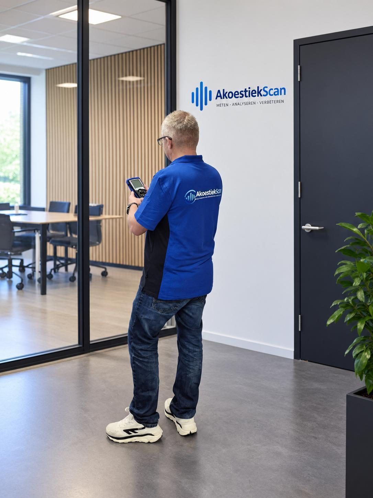
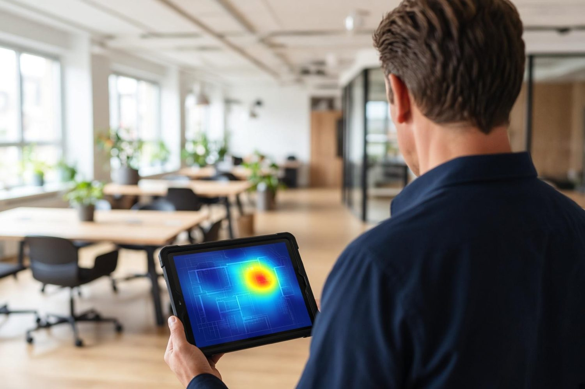

01
Scannen
De relevante eigenschappen van de ruimte, met klasse 1-apparatuur en een akoestische camera. Het probleem komt letterlijk in beeld.
Volledige akoestiekanalyse
Een ruimte kan er prachtig uitzien en toch niet prettig klinken. Hinderlijke nagalm, gesprekken die moeilijk te volgen zijn, of geluid uit de ruimte ernaast. De Akoestiek360 Scan brengt dat totaalbeeld in kaart: meten, analyseren en een helder rapport met eerlijk, onderbouwd advies.
Of plan direct via akoestiekscan.nl

De naam 360 staat voor het totaalbeeld. Niet alleen hoe geluid zich in een ruimte gedraagt, ook hoe het tussen ruimtes overgaat. Afhankelijk van de vraag geeft de scan inzicht in:

Een geluidslek zit vaak in een kier, een leidingdoorvoer of een aansluiting die je niet ziet. Met een akoestische camera brengen we geluid en geluidslekkages letterlijk in beeld. De opname laat zien waar het geluid vandaan komt en langs welke route het de ruimte binnenkomt.
Zo wordt duidelijk welke wand, naad of installatie het probleem veroorzaakt. De meting met klasse 1-apparatuur geeft de cijfers. De camera wijst de plek aan.
De scan is meer dan een meting. Het is de basis om gericht te beslissen, zonder maatregelen die het probleem niet oplossen.
01
De relevante eigenschappen van de ruimte, met klasse 1-apparatuur en een akoestische camera. Het probleem komt letterlijk in beeld.

02
Welke problemen spelen, waar de oorzaak ligt en welke verbetering nodig is.

03
Een overzichtelijk rapport met concrete aanbevelingen en de onderbouwing waarom die passen.
Duidelijkheid over de oorzaak van geluidsproblemen in kantoor, school, horeca of woning, en wat je eraan kunt doen.
Meetresultaten waarmee je akoestiek aantoonbaar meeneemt in ontwerp, advies en realisatie. Zo licht je keuzes toe aan de opdrachtgever.
Weet wat er speelt. Kies wat werkt.Akoestiek360, het totaalbeeld van akoestiek. Meer over nagalmmeting en luchtgeluid.
Plan een scan